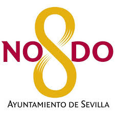

<nav class="navbar navbar-light bg-light">
    <div class="container-fluid">
      <a class="navbar-brand" href="https://www.sevilla.org/">
        
        Ayuntamiento de Sevilla
      </a>
      <form class="d-flex">
        <input class="form-control me-2" type="search" placeholder="busca en el sitio web..." aria-label="Search">
        <button class="btn btn-outline-success" type="submit">Buscar</button>
      </form>
    </div>
  </nav>

